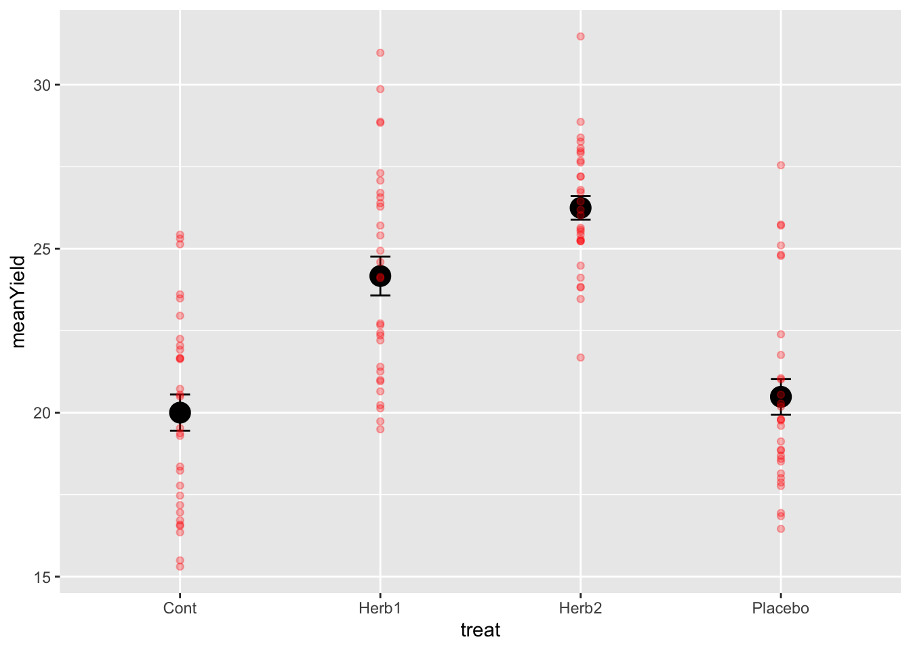

Chapter 4 Design and Analysis of Experiments
In this section we are going to learn about how to implement two experimental designs:
- CRD: the completely randomised design
- CRBD: the completely randomised block design.
These two designs are valuable in dealing with two things that make it hard to make strong inference from experiments: noise and counfounding effects.
These unwated sources of variation comes in two forms (see APS 240 reading)
The first is confounding variation. This occurs when there are one or more other sources of variation that work in parallel to the factor we are investigating and make it hard, or impossible, to unambiguously attribute any effects we see to a single cause. Confounding variation is particularly problematic in observational studies because, by definition, we don’t manipulate the factors we’re interested in.
The second is noise. This describes variation that is unrelated to the factor we are investigating but adds variability to the results so that it is harder to see, and detect statistically, any effect of that factor. As noted above, much of experimental design is about improving our ability to account for noise in a statistical analysis.
We will consider these together, as some of the techniques for dealing with them are be applicable to both. The primary tools for dealing with them are
- randomisation
- blocking
- appropriate controls
- additional treatments.
In the following sections, we are going to focus on the first three. In doing so, we will also revisit how we make inference from 1-way ANOVA experiments and introduce a more generalised approach to making contrasts we want. If you recall from the 1-way ANOVA work you did in the previous module (Week 7), we learned about treatment contrasts, the default comparison of means to a reference level, and then the Tukey test, which makes all pairwise comparisons. Here will will find an intermediate zone.
4.1 A CRD (Completely Randomised Design) Example
The experiment is about plant crop biomass yield under several herbicide treatments - the herbicide targets weeds and not our target plant (e.g. Glyphosate): a control and two herbicides, and a third treatment that is a placebo - applied water but no herbicide.
The data for this example are called plantYield.csv.
For each treatment, we have n = 30 plants in separate pots in standarised conditions.
Can you explain why we are using the placebo? Do you know the measurement and experimental unit? As this is a 1-way ANOVA, what is the baseline hypothesis? Given that there is a control and two herbicides, are there alternative hypotheses you might test?
Let’s look at the structure of the design. As hoped, we have 30 replicates of each treatment. The second view reveals that the replicates are allocated randomly among the replicate plants. There is no order to the values in the treat column.
## treat
## Cont Herb1 Herb2 Placebo
## 30 30 30 30## plots r treat
## 1 1 1 Placebo
## 2 2 2 Placebo
## 3 3 1 Cont
## 4 4 3 Placebo
## 5 5 1 Herb2
## 6 6 2 Cont
## 7 7 1 Herb1
## 8 8 2 Herb2
## 9 9 3 Cont
## 10 10 4 PlaceboWe have now added data to this design in order to start doing statistics. The TRUTH of these data are that on average, the controls have a yield of 20, Herbicide 1 increases yield by 5, Herbicide 2 by 6 and the placebo by 1 unit. These data are also quite variable. The standard deviation around the yields is large. We are going to analyse these data and
- see if we can recover these estimates of ‘known’ yield.
- test the null hypothesis.
- test the hypothesis that herbicides, on average, increase yield.
- test whether the two herbicides are different.
- test whether the placebo is different from the control.
And there is the answer to one of the questions above!
# look at the design now.
head(plantYield)## plots r treat obs
## 1 1 1 Placebo 27.54449
## 2 2 2 Placebo 22.39018
## 3 3 1 Cont 18.23051
## 4 4 3 Placebo 19.79473
## 5 5 1 Herb2 23.46557
## 6 6 2 Cont 21.657364.1.1 The dplyr and ggplot pipeline for inference.
Now we can move to our standard data management and visualisation pipeline.
- review the data (the
plantYield.csvfile contains the data) - sumamrise the data with dplyr - generate means and se’s for the treatments
- visualise with ggplot2
# check the data
# note
# obs == yield
# treat == treatment
# r = replicate (there are 30 of each treatment)
glimpse(plantYield)## Rows: 120
## Columns: 4
## $ plots <dbl> 1, 2, 3, 4, 5, 6, 7, 8, 9, 10, 11, 12, 13, 14, 15, 16, 17, 18, 1…
## $ r <int> 1, 2, 1, 3, 1, 2, 1, 2, 3, 4, 5, 4, 6, 5, 3, 2, 6, 7, 8, 4, 5, 3…
## $ treat <chr> "Placebo", "Placebo", "Cont", "Placebo", "Herb2", "Cont", "Herb1…
## $ obs <dbl> 27.54449, 22.39018, 18.23051, 19.79473, 23.46557, 21.65736, 26.5…# let's force treat to be a factor. This will make life easier later...
plantYield <- plantYield %>%
mutate(treat = factor(treat))
# summarise to get means and ses
sumDat <- plantYield %>%
group_by(treat) %>%
summarise(
# calculate the means
meanYield = mean(obs),
# calculate the se
seYield = sd(obs)/sqrt(n())
)
# plot the raw data and the mean±se
# start with the mean±se and then add the raw data
ggplot(sumDat, aes(x = treat, y = meanYield))+
geom_point(size = 5)+
geom_errorbar(data = sumDat, aes(ymin = meanYield - seYield, ymax = meanYield+seYield),
width = 0.1)+
geom_point(data = design, aes(x = treat, y = obs), colour = 'red', alpha = 0.3)
A few things to notice.
- The data are quite variable and the means of the herbicide treatments are roughly 5 and 6 units higher than the control. GOOD. This is as we expected….
- The standard errors are quite small, even though the variation is large! Why is that!?
- The two herbicides don’t look very different, especially given the variation around each treatment. Neither do the placebo and control. We need some stats.
- For those of you interested in some extra reading and thinking, the 95% Confidence Interval around the means can be calculated using
1.96*SE==1.96*sd(obs)/sqrt(n()). Go ahead and do that and look into that if you want…
4.1.2 The One-Way ANOVA.
If you’ve been paying attention, we’ve essentially designed and plotted the data for a 1-way ANOVA. These data are very similar to the daphnia parasite data we finished semester 1 with.
To analyse these data, we use the lm() function to build the model, check assumptions, and then make inference. Let’s go.
# the model
modYield <- lm(obs ~ treat, data = plantYield)
# assumptions
autoplot(modYield)
# inference: anova
anova(modYield)## Analysis of Variance Table
##
## Response: obs
## Df Sum Sq Mean Sq F value Pr(>F)
## treat 3 807.49 269.164 33.257 1.383e-15 ***
## Residuals 116 938.85 8.094
## ---
## Signif. codes: 0 '***' 0.001 '**' 0.01 '*' 0.05 '.' 0.1 ' ' 1# contrasts
summary(modYield)##
## Call:
## lm(formula = obs ~ treat, data = plantYield)
##
## Residuals:
## Min 1Q Median 3Q Max
## -4.6952 -2.1542 -0.3872 1.8383 7.0609
##
## Coefficients:
## Estimate Std. Error t value Pr(>|t|)
## (Intercept) 20.0004 0.5194 38.506 < 2e-16 ***
## treatHerb1 4.1655 0.7346 5.671 1.06e-07 ***
## treatHerb2 6.2449 0.7346 8.502 7.43e-14 ***
## treatPlacebo 0.4832 0.7346 0.658 0.512
## ---
## Signif. codes: 0 '***' 0.001 '**' 0.01 '*' 0.05 '.' 0.1 ' ' 1
##
## Residual standard error: 2.845 on 116 degrees of freedom
## Multiple R-squared: 0.4624, Adjusted R-squared: 0.4485
## F-statistic: 33.26 on 3 and 116 DF, p-value: 1.383e-154.1.3 Making insight and inference
Lets walks through things very discretely.
- Our graph suggests that herbicide treatments have an effect of increasing yield.
- Our model is designed to test this hypothesis - are any of the differences among means non-zero?
- Our hypothesis is probably really about whether the herbicide and placebos are different than the controls. All Hail the treatment contrast!
- Our diagnostics are fantastic… the best you’ve ever seen.
- The Anova Table confirms that there are differences - we can reject the null hypothesis
- The summary table confirms that Herb1 and Herb2 are both larger than controls and the Placebo is not.
How do we interpret even more?
The estimate associated with Control is 20! Just where it should be.
The estimates associated with Herb1, Herb2 and Placebo are the differences between the mean of these treatments and the control (the reference level!). These differences are positive for Herb1 and Herb2, close to 5 and 6 respectively (as expected) and this positive difference is not 0 via the statistical test.
However, the difference for Placebo is close to 0 and therefore we can not reject the null hypothesis test that it differs from control. GENUIS!
4.2 A priori vs. Post-Hoc Contrasts
As we discussed above, there are likely several other questions we might have wanted to answer when designing this experiment. For example, are the two herbicides different in their effects?
4.2.1 Custom contrasts versus the Tukey Test
In the semester 1, we introduced how to do a Tukey Test. This is known as an a posteriori test – testing the significance of things suggested by the experiment, also known as data snooping or data dredging. These are multiple comparison methods (Bonferroni, Scheffe method, Tukey honest significant difference, Duncan’s multiple range test) which try to control the chance of getting a significant result by chance.
To understand the risks of these, consider this experimental design. We have 7 treatments. With 7 treatments, there are 21 pairwise comparisons. With p-value threshold of \(0.05\) we expect 1/20 (5/100) tests to be significant. So with this 7 treatment and 21 comparison design, would you expect a signficant result by chance? You betyja.
This is why, unless a priori (in advance) you can justify ALL pairwise comparisons, a Tukey Test may not be appropriate.
Some statisticians really don’t like them:
“In my view multiple comparison methods have no place at all in the interpretation of data” -Nelder (a very very very well respected statistician).
4.2.1.1 The more appropriate approach - custom contrasts
The more appropriate approach is to specify a priori (before the experiment) a set of hypotheses you want to test, and then test them using contrasts.
For our experiment, as noted above, we were probably interested in what our treatment contrasts provided - tests of difference with the control. But we had a few others too.
Specifying specific contrasts is easy once you get your head around the ‘structure’ of the syntax.
Lets have a go with specifying a comparison JUST between Herbicide 1 and the control. Remember that your model is called modYield and your data is called design.
# check the levels and ORDERING of the treatments
# this function, levels(), tells you this
# note the ORDER: it is alphabetical, and control comes first
# the words fill in four slots c(X,X,X,X).
# we will use these slots....
levels(plantYield$treat)## [1] "Cont" "Herb1" "Herb2" "Placebo"# define the contrast you want using -1, 1 and 0's
# this says compare control with herbicide 1.... and ignore the Herb2 and Placebo
# we give the reference -1 to the control slot
# and the reference 1 to the Herbicide 1 slot.
contrast <- c(-1,1,0,0)
# use the fit.contrast function from gmodels
fit.contrast(modYield, "treat", contrast)## Estimate Std. Error t value Pr(>|t|)
## treat c=( -1 1 0 0 ) 4.165507 0.734555 5.67079 1.058335e-07
## attr(,"class")
## [1] "fit_contrast"So, this says that the difference between the control and Herbicide 1 is ~5 and that this is different from 0. Does that number 4.16 look familiar? It should. It is the same number from the summary() table of the full model. This is because we just specified one of the three treatment contrasts that summary() uses.
# remind ourselves of the contrast from the summary table
summary(modYield)##
## Call:
## lm(formula = obs ~ treat, data = plantYield)
##
## Residuals:
## Min 1Q Median 3Q Max
## -4.6952 -2.1542 -0.3872 1.8383 7.0609
##
## Coefficients:
## Estimate Std. Error t value Pr(>|t|)
## (Intercept) 20.0004 0.5194 38.506 < 2e-16 ***
## treatHerb1 4.1655 0.7346 5.671 1.06e-07 ***
## treatHerb2 6.2449 0.7346 8.502 7.43e-14 ***
## treatPlacebo 0.4832 0.7346 0.658 0.512
## ---
## Signif. codes: 0 '***' 0.001 '**' 0.01 '*' 0.05 '.' 0.1 ' ' 1
##
## Residual standard error: 2.845 on 116 degrees of freedom
## Multiple R-squared: 0.4624, Adjusted R-squared: 0.4485
## F-statistic: 33.26 on 3 and 116 DF, p-value: 1.383e-154.2.1.2 A different contrast - Herbicide 1 vs Herbicide 2.
If we want to compare the two herbicides we can use this approach. Note in advance that this contrast DOES NOT exist in the summary table!
# define the contrast you want using -1, 1 and 0's
# this says compare herb1 with herb2, ignoring the control and placebo.
# we give the slot for herbicide 1 a "-1" and the slot for herbicide 2 a "1".
contrast <- c(0,-1,1,0)
# use the fit.contrast function from gmodels
fit.contrast(modYield, "treat", contrast)## Estimate Std. Error t value Pr(>|t|)
## treat c=( 0 -1 1 0 ) 2.079439 0.734555 2.830882 0.005473189
## attr(,"class")
## [1] "fit_contrast"Isn’t this cool? And quite surprising, right? We did not expect this. This says that despite the difference we created of ~1 unit of yield between Herb1 and Herb2, and even with the big variation, the statistics detect a significant difference.
Note that the difference reported is the difference between the two means that we calcuated from the sumDat calculation above!:
# check our summary data
sumDat## # A tibble: 4 × 3
## treat meanYield seYield
## <fct> <dbl> <dbl>
## 1 Cont 20.0 0.552
## 2 Herb1 24.2 0.591
## 3 Herb2 26.2 0.359
## 4 Placebo 20.5 0.544Here it is: \(26.2 - 24.2 = 2\)
4.2.1.3 A more complex contrast: comparing the average of the herbicide effect with the control.
This might be a comparison you intended to make also… the average effect of herbicides in general. To do this, we expand the idea of -1,1 and 0’s to include 1/2s (yes, 1/3’s and more are possible):
# define the contrast you want using -1, 1 and 0's
# this says compare control with the average of herbicide 1 and 2, ignoring the placebo
# we give the control slot a -1 and the two herbicide slots a 1/2 each.
contrast <- c(-1, 1/2, 1/2, 0)
# use the fit.contrast function from gmodels
fit.contrast(modYield, "treat", contrast)## Estimate Std. Error t value Pr(>|t|)
## treat c=( -1 0.5 0.5 0 ) 5.205226 0.6361433 8.182475 4.015904e-13
## attr(,"class")
## [1] "fit_contrast"How very cool. This custom contrast delivers the inference that herbicides on average increase yield by five units.
Again, checking sumDat, we can see where this result comes from.
sumDat## # A tibble: 4 × 3
## treat meanYield seYield
## <fct> <dbl> <dbl>
## 1 Cont 20.0 0.552
## 2 Herb1 24.2 0.591
## 3 Herb2 26.2 0.359
## 4 Placebo 20.5 0.544\((24.2+26.2)/2 = 25.2\) –> \(25.2 - 20 = 5.2\)
4.2.2 The Write Up using contrasts.
Fill in these blanks using the various contrasts you made above!
We conclude that herbicides on average cause an _____ gram increase in yield (t = ___ , p = ___ ). We also note that there was a significant difference of _____ grams between the herbicides (t = _____ p = ______). The additional placebo treatment had no effect on yield (t = _______ p = __________).
4.2.3 Coming Back to Randomisation
We have worked here with a CRD where the measurement units are completely randomised to the experimental treatments. This simple effort is super valuable. As you’ve read.
Randomisation guards against a variety of possible biases and confounding effects, including the inadvertent biases that might be introduced simply in the process of setting up an experiment…. Randomisation is a critical method for guarding against confounding effects. It is the best insurance we have against unwittingly getting some other factor working in parallel to a treatment.
But what if we know there is a gradient, or a feature of the environment or lab system that we KNOW could confound the design. Is there any way we can remove this known pattern? Yes…. of course there is.
4.3 THE RCBD - The Randomised Complete Block Design
Blocking allows us to reduce known experimental error.
A block is a group of experimental units that are homogeneous in some sense – in the same place, or measured at the same time, or by the same person. They may experience a similar temperature, or hormone concentration. They may simply be a position in the incubator where light varies from front to back.
So when constructing blocks we try and select experimental units that are homogeneous within blocks but where the blocks, and thus units within them, may be dissimilar.
Why block? When we use a completely randomised design, the location or timing of our treatment ‘plots’ (patches with different N or soil-moisture, incubators, locations in a 96 well plate) can generate heterogeneity in experimental error (variation).
This has consequences for our ability to detect effects. As the variance of the Experimental Error increases, confidence intervals get wider and the power of our analysis decreases - it’s harder to detect effects of our treatments against the background noise. Ideally we would like to use experimental units that are homogeneous so the experimental error will be small. Blocking does this.
The simplest blocked design is the Randomized Complete Block design (RCB)
We have one complete set of treatments in each block. For the sake of example, lets imagine we identify three ‘blocks’ - soil moisture zones. In the design above, we would allocate 10/30 replicates of each treatment to each block.
In the first block, we randomly assign the 10 treatments to n locations in the block. We do an independent randomization in each block. This is the RCB design.
For example, consider the following matrix: the rows are the blocks, the letters the different treatments. In each block, each treatment is represented, but it is in a different location in the block (randomisation of the g treatments in the n units). The blocks are in a sequence - left to right - this could be different days, different locations or different positions on a hillside, for example representing an elevation or soil moisture gradient.
The Blocks are designed to ‘capture’ that underlying source of variability and allow us to detect among treatment differences more effectively.
For example, consider the following matrix: the rows are the blocks, the letters the different treatments. In each block, each treatment is represented, but it is in a different location in the block (randomisation of the g treatments in the n units). The blocks are in a sequence - left to right - this could be different days, different locations or different positions on a hillside, for example representing an elevation or soil moisture gradient.
The Blocks are designed to ‘capture’ that underlying source of variability and allow us to detect among treatment differences more effectively.
## [,1] [,2] [,3] [,4] [,5]
## [1,] "A" "B" "A" "E" "D"
## [2,] "C" "A" "D" "C" "A"
## [3,] "D" "E" "B" "D" "C"
## [4,] "E" "C" "E" "B" "E"
## [5,] "B" "D" "C" "A" "B"Here is another picture of a block design that moves from just letters to something more literal.

The blocks are arranged along a gradient, say along the side of a hill, so represent low and high elevation and associated soil moisture. The blocks capture this background variation. THEN, each treatment level (1-4) is allocated a random position in each block. In the end, each treatment level is replicated across blocks (n = 6!). From: https://www.researchgate.net/publication/322369242_Randomized_Block_Design_probiotic_example/figures?lo=1
It is important to note that blocks exist at the time of the randomization of treatments to units. We cannot impose blocking structure on a completely randomized design after the fact; either the randomization was blocked or it was not.
We use an RCB to increase the power and precision of an experiment by decreasing the error variance. This decrease in error variance is achieved by finding groups of units that are homogeneous (blocks) and, in effect, repeating the experiment independently in the different blocks. The RCB is an effective design when there is a single source of extraneous variation in the responses that we can identify ahead of time and use to partition the units into blocks.
In short ALWAYS block your experiment, if you can.
You can have spatial blocks, or temporal blocks where you repeat the experiment at different times, or block by batch.
In general, any source of variation that you think may influence the response and which can be identified prior to the experiment is a candidate for blocking.
4.4 An example of the RCBD
Lets modify our previous example to including blocking. If you wish to replicate the analysis, the data are plantYield_Blocked.csv.
## plots block treat obs
## 1 11 1 Placebo 31.18707
## 2 12 1 Control 31.99603
## 3 13 1 Herb2 41.29937
## 4 14 1 Herb1 41.12746
## 5 21 2 Control 21.08111
## 6 22 2 Herb1 30.56917
## 7 23 2 Herb2 28.09290
## 8 24 2 Placebo 21.02990
## 9 31 3 Herb2 27.44097
## 10 32 3 Herb1 30.297494.5 Analysing the CRBD
I’ll leave it to you now to generate the following plot of the means ± standard errors.
This requires thinking hard about the use of dplyr tools (group_by() and summarise()) and ggplot (adding more than one layer from two different sources of data - the summary data and the raw data). You need to make a sumDat object for the means and se’s. Then you need to plot the raw data, and overlay the mean±se info from the sumDat.
Can you see the variation between block 1 and 5? Block 2-4 are all similar…. Block 1 is 10 units more, and Block 5 is 10 units less.
## Rows: 20
## Columns: 4
## $ plots <dbl> 11, 12, 13, 14, 21, 22, 23, 24, 31, 32, 33, 34, 41, 42, 43, 44, …
## $ block <fct> 1, 1, 1, 1, 2, 2, 2, 2, 3, 3, 3, 3, 4, 4, 4, 4, 5, 5, 5, 5
## $ treat <fct> Placebo, Control, Herb2, Herb1, Control, Herb1, Herb2, Placebo, …
## $ obs <dbl> 31.18707, 31.99603, 41.29937, 41.12746, 21.08111, 30.56917, 28.0…
4.5.1 Building the model
In order to understand what’s going on with blocking, and it’s importance, lets build the naive model that ignores block - treating this as a CRB - and the correct model, letting block absorb some of the variation.
# models
naive_model <- lm(obs ~ treat, plantYield_Block)
block_model <- lm(obs ~ block + treat, plantYield_Block) # note the order is important
# anova tables
anova(naive_model)## Analysis of Variance Table
##
## Response: obs
## Df Sum Sq Mean Sq F value Pr(>F)
## treat 3 417.82 139.274 2.5085 0.09579 .
## Residuals 16 888.34 55.521
## ---
## Signif. codes: 0 '***' 0.001 '**' 0.01 '*' 0.05 '.' 0.1 ' ' 1anova(block_model)## Analysis of Variance Table
##
## Response: obs
## Df Sum Sq Mean Sq F value Pr(>F)
## block 4 877.08 219.270 233.68 2.871e-11 ***
## treat 3 417.82 139.274 148.43 9.469e-10 ***
## Residuals 12 11.26 0.938
## ---
## Signif. codes: 0 '***' 0.001 '**' 0.01 '*' 0.05 '.' 0.1 ' ' 1The first important thing to focus on here is the difference in the Mean Sq Residual Errors - in the naive_model, it is \(55.52\). In the block_model, it is \(0.94\).
The second important thing to notice is that haveing allocated variation to block in the block_model, and thus reducing the error variation, the treatment effect shifts from being insignificant to significant.
4.5.2 Are the estimates of the parameters what we expect?
Lets check that the model is estimating differences as we might have expected. We can do this using the summary table.
Let’s remember that, for example, the mean of Herb1 is expected to be 10 units higher than control with a yield of 20, and block 1 is supposed to be ~10 units higher than 2,3,4.
summary(block_model)##
## Call:
## lm(formula = obs ~ block + treat, data = plantYield_Block)
##
## Residuals:
## Min 1Q Median 3Q Max
## -1.3505 -0.7196 0.2147 0.6396 1.0719
##
## Coefficients:
## Estimate Std. Error t value Pr(>|t|)
## (Intercept) 31.2184 0.6126 50.957 2.14e-15 ***
## block2 -11.2092 0.6850 -16.365 1.43e-09 ***
## block3 -12.1132 0.6850 -17.685 5.84e-10 ***
## block4 -11.3415 0.6850 -16.558 1.25e-09 ***
## block5 -20.8449 0.6850 -30.433 9.94e-13 ***
## treatHerb1 10.3450 0.6126 16.886 9.96e-10 ***
## treatHerb2 9.0721 0.6126 14.808 4.50e-09 ***
## treatPlacebo 1.3192 0.6126 2.153 0.0523 .
## ---
## Signif. codes: 0 '***' 0.001 '**' 0.01 '*' 0.05 '.' 0.1 ' ' 1
##
## Residual standard error: 0.9687 on 12 degrees of freedom
## Multiple R-squared: 0.9914, Adjusted R-squared: 0.9864
## F-statistic: 197.1 on 7 and 12 DF, p-value: 2.009e-11In this table, the INTERCEPT is specifying the FIRST BLOCK and the CONTROL TREATMENT LEVEL - we know this because it’s these words that are missing from the rest of the table, and they are each the first alphanumerially in the list of blocks and treatments.
The value of the control, block 1 is approximately 30! Which is 20+10, which is what we expected. The value of Herb1 is ~10 units higher than this (remember, the value 9.84 is the DIFFERENCE between the control and treatment) And the value of block 5 is reported as 20 unites lower than block 1 control. This too is correct because, as above, block 1 control is 10 units higher than the control mean (20+10) and block 5 is 10 units lower….
Make sure you get this logic!
The take home message here is that these numbers from the model make complete sense with respect to the data that we simulated. Furthermore, controlling for the among block variation gave us more power to detect a treatment effect, something we would have missed had we not estimated the block source of variation.
4.5.3 Correct Standard Errors for a Figure
When we made our initial plot above, we calculated the standard error based on all observations among blocks. However, the variation we really wish to represent is the variation after having controlled for the blocking effects.
This means that the standard deviation we should probably use is of the error variance from the correct model: \(0.94\).
The standard deviation is the \(\sqrt{Var}\) and thus, our correct standard errors from the model are \(\sqrt{0.94}\)
There is a very nice plotting function in the package visreg that delivers these proper standard errors in a nice ggplot framework. It presents points that are the partial residuals (deviation from the mean for each replicate), lines depicting the means, and shaded area as a 95% confidence interval, calculated as 1.96*SE, where the SE is estimated from the model error variance (just above). Compare this to your first graph.
visreg(block_model, "treat", gg=TRUE)+
ylab("Yield") +
xlab("Treatment") 4.5.4 Making inference: confidence intervals and contrasts
We are now in a very strong position to make inference.
Let’s start with a rule of thumb linked to the 95% confidence interval. If the CIs don’t overlap, they are different; if they do, they are not. This indicates that Cont and Placebo are not significantly different (95% confidence intervals overlap). Herb1 and Herb 2 are significantly different from these, but not each other.
This is OK. But it’s not robust. Let’s revisit our post-hoc and a priori methods for evaluating differnces among treatments. We can apply a tukey test and calculate all pairwise differences. This is not a good idea, but let’s do it.
# use agricolae HSD.test()
tukey_out <- HSD.test(block_model, "treat", group = TRUE)
tukey_out$groups## obs groups
## Herb1 30.46167 a
## Herb2 29.18874 a
## Placebo 21.43581 b
## Control 20.11665 bThis confirms our intuition and 95% Confidence Interval insights. But is it correct?
Let’s make a formal test of one of the pairwise tests that looks obvious - between Herb1 and Herb2
# fit.contrast from gmodels package
contrast <- c(0,-1,1,0)
fit.contrast(block_model, "treat", contrast)## Estimate Std. Error t value Pr(>|t|)
## treat c=( 0 -1 1 0 ) -1.272934 0.6126423 -2.077777 0.05985811
## attr(,"class")
## [1] "fit_contrast"Amazing. The contrast defining a specific test provides a different answer than the post-hoc Tukey test and our guess based on the 95% CIs. Why is that? Which is right?
Of course the contrast is the correct and most reliable result. While both fit.contrast and HSD.test both manage the model complexity and variance estimates properly, only the contrast reduces the probability of finding a significant difference by chance or failing to find one.